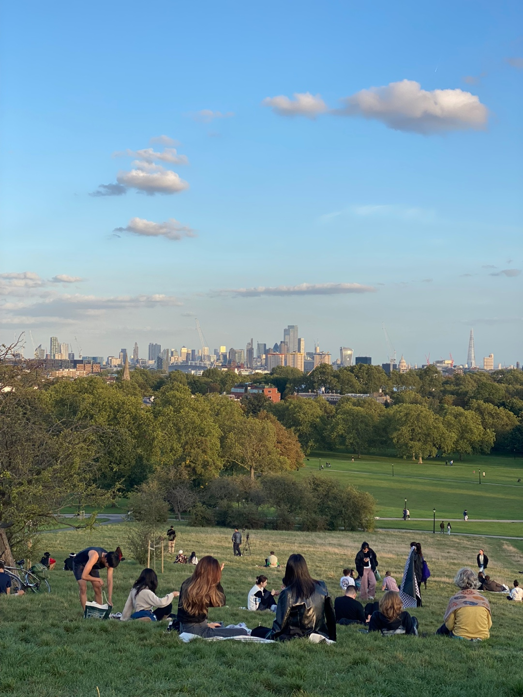
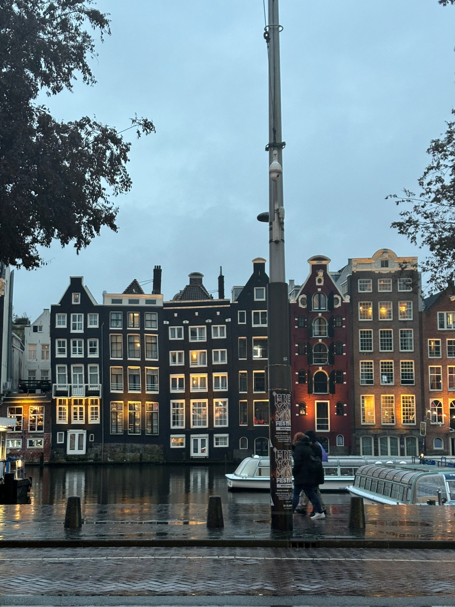
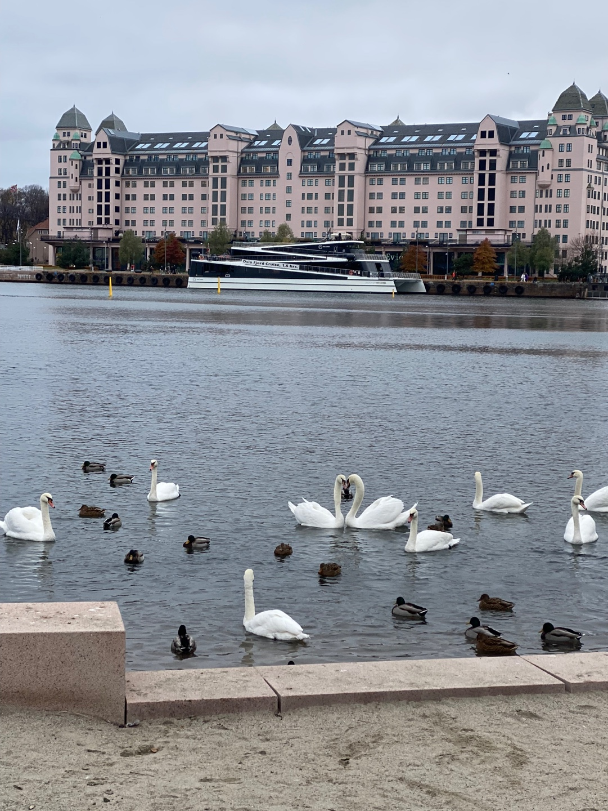
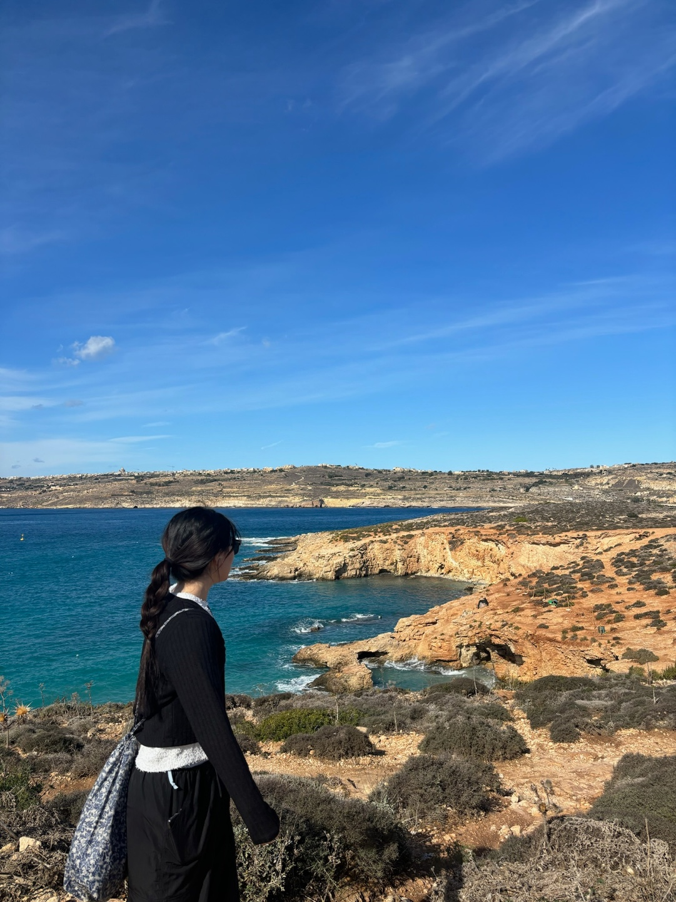
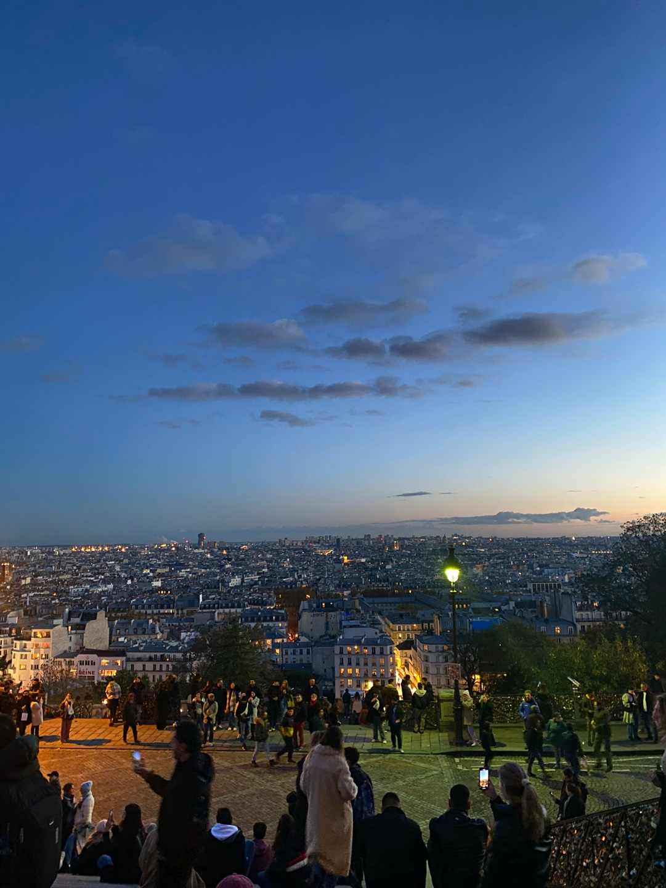
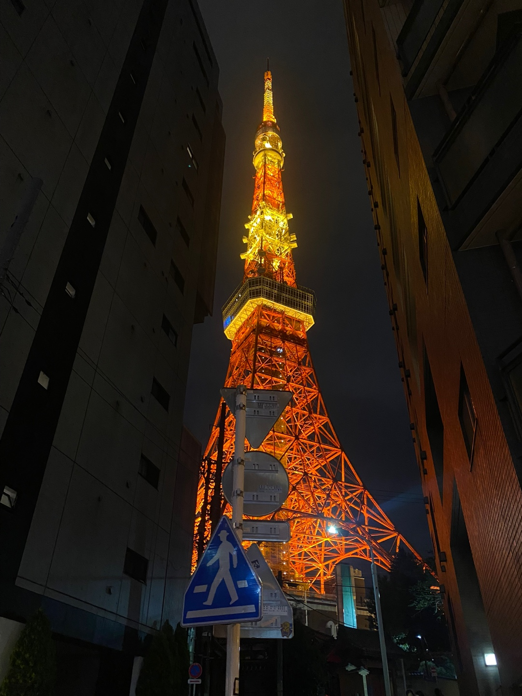

기억에 남는 여행지






안녕하세요, 비비입니다! 낯을 좀 가리지만 사람들이랑 놀고 얘기하는걸 좋아해요. 말 걸어주세용...🤍🤍 하면 한다 주의라 하고자 하는 것에 있어서는 될 때까지 하는 편인 것 같아요. 도전하는 것도 좋아하고 새로운 것들을 배우는걸 좋아해요. 이것저것 많이 했었는데 최근에는 또 너무 모든 것을 얕게만 아는게 아닌가 하는 생각이 들어서 깊은 공부를 해보고 싶어서 우테코에 들어왔습니당. 토론하는 것도 좋아하니 궁금한거나 모르겠는 부분이 있으면 저한테 공유해주세용. 도움은 안 될지 모르지만...같이 얘기하면서 생각해봐요!







엄청 옛날 노래인데, 베이스를 배우게 되면서 알게 되었습니다. 이 곡을 연습할 때는 굉장히 고통스러웠지만 그래도 베이스 시작할 때 연습했던 노래라 기억에 많이 남는 것 같아요. 지금은 베이스를 못 치지만 여전히 베이스가 좋은 노래들을 찾아서 듣고 있어서 인생 노래로 정해봤습니당~~

제가 정말 좋아하는 배우가 나오는 일본 드라마입니당. 사진은 제가 가장 좋아한 대사입니다~ 이 드라마를 보면 그래도 살아가자! 라는 생각이 들게 해주는 것 같아요. 사실 인생을 살면서 아주아주 힘든 일은 없었다고 생각하지만 그래도 힘든 일이 있을 때는 이 드라마를 떠올립니다. 살아가면서 절대 절망을 안 한다거나, 눈물을 흘리지 않는다거나 하는건 제 인생관과는 다르긴 하지만 어떤 일이 있어도 담담한 주인공을 보다보면 위로를 받는 느낌이 들어요. 또, ost도 제가 정말 좋아하기 때문에 한 번씩 들어보시길 추천드립니다~!
이 글을 읽으면서 계속 고개를 끄덕였네요 👍